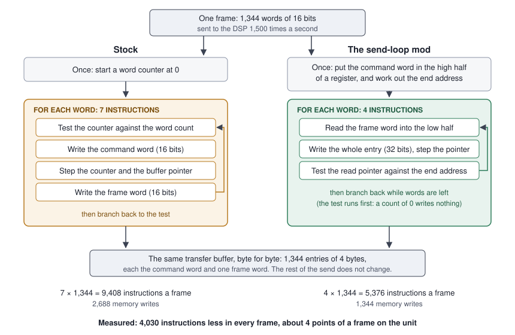

Digitone II Mods / send loop
The main processor of the Digitone II sends a frame of values to the sound processor 1,500 times a second. This mod makes that send shorter. You hear no difference. The main processor has more room before a busy pattern makes it run late. Select your firmware file. Then download a signed image.
Make sure that you can go back to stock before you flash a modified file. The Early Start-up Menu flashes the stock firmware over MIDI. Do this one time with the stock file, before you flash a modified file. Back up your +Drive. No tool here can recover it.
Go to 1.11 from 1.10E. If your unit has OS 1.10D, install the stock OS 1.10E first. Then install OS 1.11, stock or modified. Do not go from 1.10D directly to 1.11.
There is nothing to switch on and nothing new on the screen. The instrument sounds and plays as before.
The Digitone II has two processors. One runs the sequencer, the screen and the keys. The other makes the sound. Before each send, the first one copies a frame of 1,344 values into a transfer buffer. The factory firmware uses 7 instructions for each value. This mod uses 4, and the buffer holds the same bytes.

On a unit with OS 1.11, the audio interrupt used 46.1 % of a frame on a busy factory pattern. A control build used 50.0 %. The busiest frame went from 95.6 % to 91.7 %. The technical page has the code of the loop and the measurements.
This mod is at v0.1.0. What changed in each version, newest first.
The table below is the row of this mod in the
compatibility table. dnfw mods matrix generates it.
✓: you can combine the two mods in either order. ✓*: you can combine them in one order only. ✗: you cannot combine them. To see the reason, put the pointer on a cell.
arpmodes | arpplocks | arpscale | bootscreen | degreetranspose | directjump | fxmod | layermidi | lfo4 | lfolength | lfowaves | midiarp | moddest | pslide | reloadconfirm | sendloop | songguard | transients | usbprobe | waverider | |
|---|---|---|---|---|---|---|---|---|---|---|---|---|---|---|---|---|---|---|---|---|
Send loop sendloop | ✓ | ✓ | ✓ | ✓ | ✓ | ✓ | ✓ | ✓ | ✓ | ✓ | ✓ | ✓ | ✓ | ✓ | ✓ | — | ✓ | ✓ | ✓ | ✓ |
This mod combines with Arpeggiator SHUF and RAND, Arpeggiator p-locks, Arp offsets in scale, Boot screen, Degree transpose, Direct jump, LFO modulation of the FX, Layering onto MIDI tracks, A fourth LFO, LFO ONE/HALF fix, New LFO waveforms, Arpeggiator on MIDI tracks, More modulation destinations, Parameter slides, Reload confirm, Song guard, FM drum transients, USB SysEx probe (diagnostic) and Waverider, a sixth machine. See the compatibility table.
Use a Digitone II OS 1.11 .syx file from Elektron. To combine mods, you can
also use an image that a different page here built (refer to the table above).
or drag it here